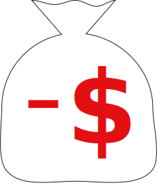

Your Bike
Second Hand
Don’t want to rent a bike?Luckily there is a cheap alternative. Because there are a lot of bike dealerships which sell great second hand Bicycle’s. Do you want to know what to look for on a second bike? Check our buy a second hand bike guide.
Rental
Renting a bike is the perfect solution if you don't want any trouble with it. Because most bike renting company's fix your bike when it's broken. You pay money each month to use your bike. So it can be very cheap if your not staying to long in Amsterdam. We have made a list of best bike rental company in Amsterdam.
Essentails
If your thinking of buying a bike. You must know that there is more needed then only your rusty comrade. But no worries we have made a list of essentials for you!